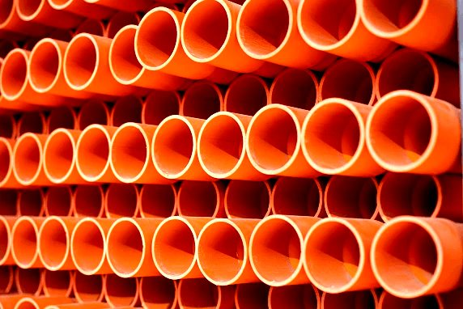
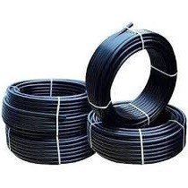
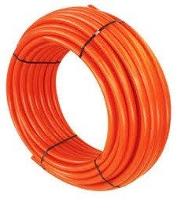
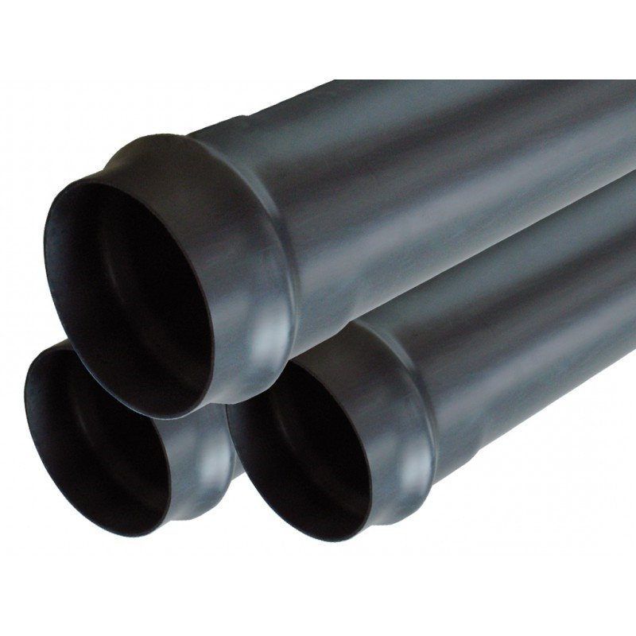
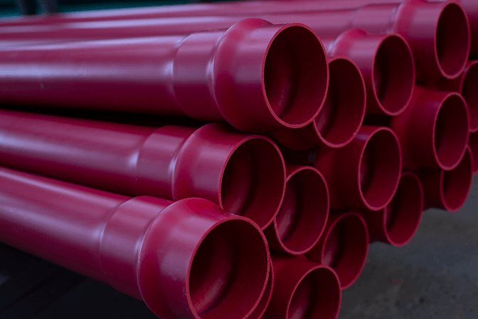

Tubos PVC, acoples y cañerías
fabricados en Chile
Conduit, hidráulica, Schedule, sanitaria, colector, subterránea y cañerías de polietileno. Elige tu medida, arma tu cotización y te respondemos a la brevedad.
Lunes a viernes 09:00 a 18:00 hrs
Catálogos con medidas y selector
Elige tu producto y medida
Selecciona tipo, clase y diámetro. Agrega a tu cotización en segundos.
Eléctrico e Industrial
Conduit para cables · Schedule para uso industrial pesado y exteriores UV


Acoples Hidráulicos
Fitting PVC para agua potable y redes de distribución a presión PN 10


Tuberías
El tubo — la parte principal de cada red. Hidráulica a presión, Schedule industrial, Conduit eléctrica y sanitaria.


Tubos y cañerías
Tubos de PVC y cañerías
Nuestra experiencia en el mercado nos ha permitido diversificar nuestros productos, desarrollando tubos de PVC y cañerías de alta calidad.

Tubería Subterránea 750 N
PVC naranja autoextinguible para canalizaciones subterráneas, según IEC 61386.24, de 25 a 160 mm.
Ver información técnica →Ficha técnica (PDF) ↓
Cañerías PEBD Reciclado
Polietileno de baja densidad reciclado, negro, en rollos de 50 y 100 m, de ½" a 4". Hasta 5 bar para riego.
Ver información técnica →Ficha técnica (PDF) ↓
Cañerías PEAD
Tubería curvable de polietileno de alta densidad, naranja, en rollos de 100 m, con aditivo antillama.
Ver información técnica →
Tubería Schedule
PVC industrial naranja o gris (con protección UV) de ½" a 6", norma 40 y 80 según ASTM D-1785-06.
Ver información técnica →Ficha técnica (PDF) ↓
Tubería PVC Conduit
PVC naranja autoextinguible para conductores eléctricos, de 16 a 160 mm, con tolerancia a -15 °C certificada por CESMEC.
Ver información técnica →Ficha técnica (PDF) ↓
Tubería PVC Sanitaria Gris
PVC gris para alcantarillado domiciliario, estanca para aguas servidas. De 40 a 110 mm en 6 m.
Ver información técnica →Ficha técnica (PDF) ↓
Tubería PVC Colector
PVC negro para conducción gravitacional de residuos industriales líquidos, aguas lluvias y alcantarillado enterrado.
Ver información técnica →Ficha técnica (PDF) ↓
Tubería Hidráulica
PVC-U celeste en 6 m para agua potable, instalaciones sanitarias y riego. Presiones PN 6, 8, 10, 12,5 y 16.
Ver información técnica →Ficha técnica (PDF) ↓
Tubos Telefónicos
PVC de 6 m para fibra óptica y cables telefónicos, en colores por compañía. De 32 a 110 mm, norma CTC.
Ver información técnica →Preguntas frecuentes
Dudas comunes sobre tubos y cañerías
¿Qué presiones nominales tiene la tubería hidráulica de Plastiservi?
Se fabrica en PVC-U celeste, en 6 metros, con presiones nominales PN 6, 8, 10, 12,5 y 16 según la norma NCh 399. Soporta temperaturas de instalación y servicio de -20 °C a 60 °C.
¿Cuál es la diferencia entre tubería Conduit y Schedule?
La Conduit protege conductores eléctricos (16 a 160 mm, norma IEC 61386-1, clasificada por resistencia a la compresión). La Schedule es de uso industrial, minero y para fluidos corrosivos (½" a 6", norma 40 y 80 según ASTM D-1785-06), en naranja o gris con protección UV.
¿Qué tubería se usa para alcantarillado domiciliario?
La tubería PVC sanitaria gris, de 40 a 110 mm en largos de 6 m, certificada bajo la norma NCh 1635. Para redes enterradas e industriales existe la tubería colector negra, con unión Anger (con goma).
¿Qué cañería recomiendan para riego?
La cañería de polietileno de baja densidad reciclado (PEBD), negra, en rollos de 50 y 100 metros, de ½" a 4", que soporta hasta 5 bar de presión.
¿Tienen fichas técnicas para descargar?
Sí. Puedes descargar en PDF las fichas de las tuberías Conduit, Hidráulica, Schedule, Sanitaria, Colector, Subterránea y Cañería de polietileno recuperado desde esta misma página.
¿Las tuberías cuentan con certificación?
Las líneas de PVC cuentan con Marca de Conformidad Permanente con certificación modelo ISO CASCO 5, otorgada por CESMEC – Bureau Veritas. La empresa mantiene además las certificaciones ISO 9001:2015 e ISO 22000:2018.
Cotiza tus tubos
¿Tienes un proyecto?
Envíanos medidas y cantidades y te respondemos a la brevedad. ¿Buscas bolsas o mangas? Ir a bolsas y mangas.
Solicitar cotización de tubos →